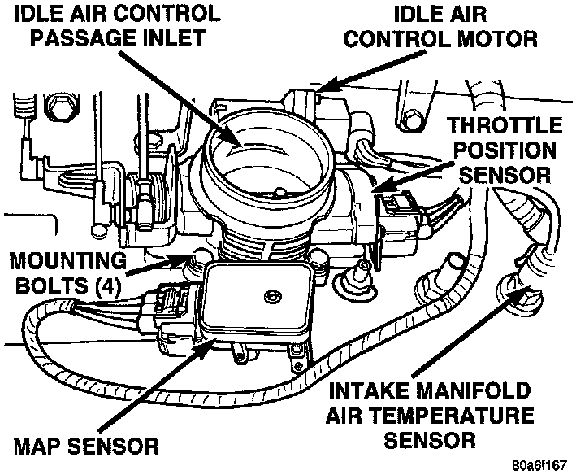

Throttle Body: Description and Operation
THROTTLE BODYFig. 22 Throttle Body - 4.0:

Filtered air from the air cleaner enters the intake manifold through the throttle body (Fig. 22). Fuel does not enter the intake manifold through the throttle body. Fuel is sprayed into the manifold by the fuel injectors. The throttle body is mounted on the intake manifold. It contains an air control passage (Fig. 22) controlled by an Idle Air Control (IAC) motor. The air control passage is used to supply air for idle conditions. A throttle valve (plate) is used to supply air for above idle conditions.
The Throttle Position Sensor (TPS), IAC motor and Manifold Absolute Pressure Sensor (MAP) are attached to the throttle body. The accelerator pedal cable, speed control cable and transmission control cable (when equipped) are connected to the throttle arm.
CAUTION: A (factory adjusted) set screw is used to mechanically limit the position of the throttle body throttle plate. Never attempt to adjust the engine idle speed using this screw. All idle speed functions are controlled by the PCM.